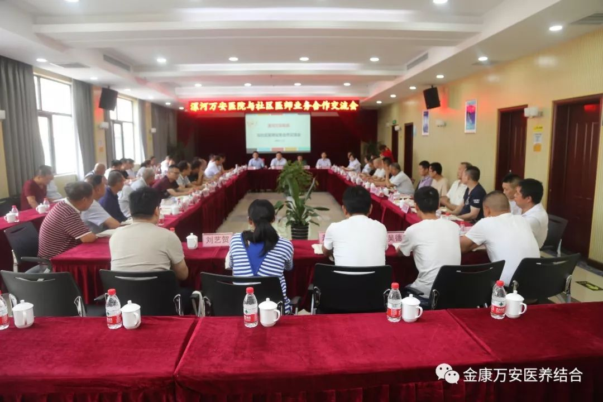
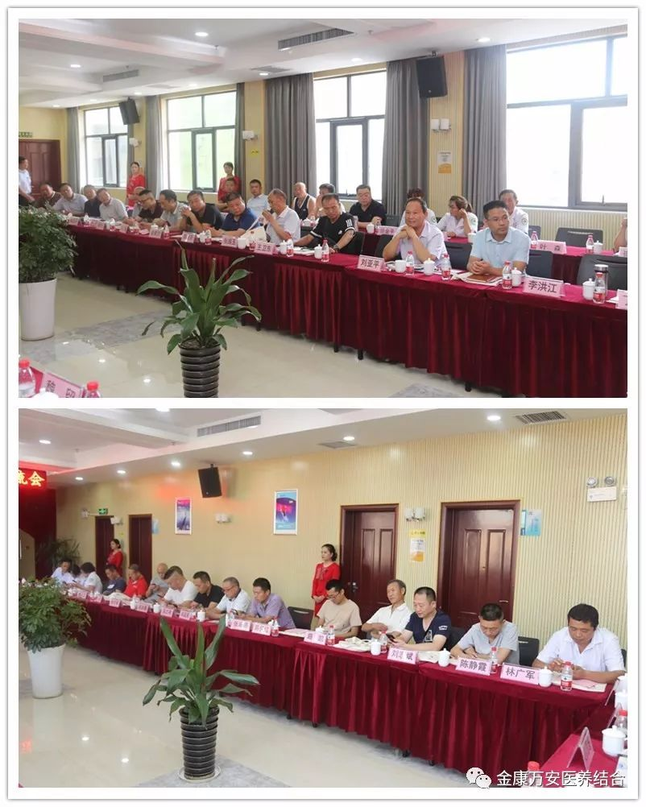
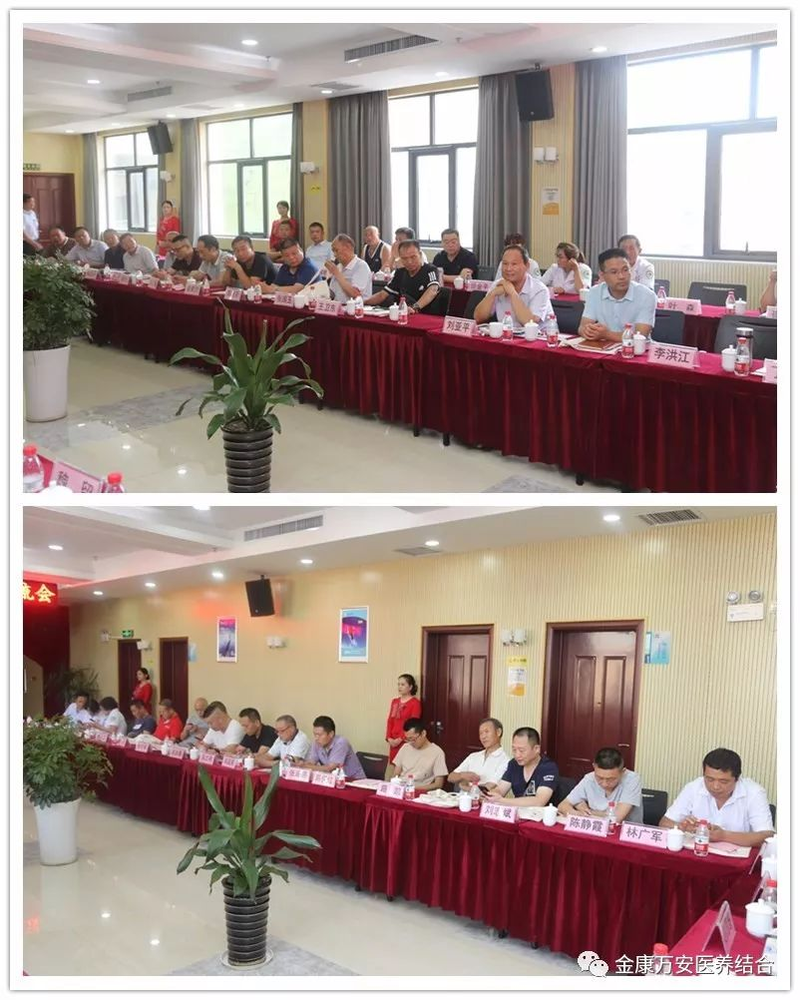
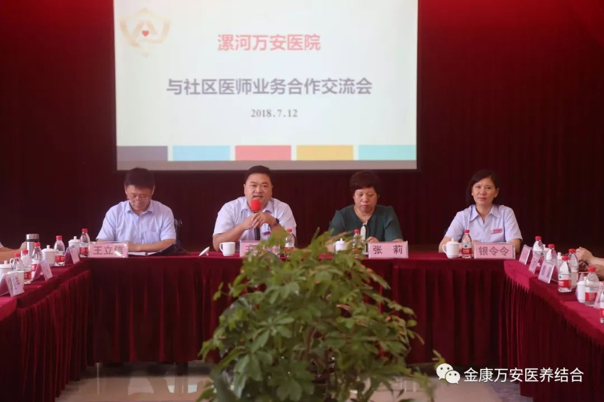
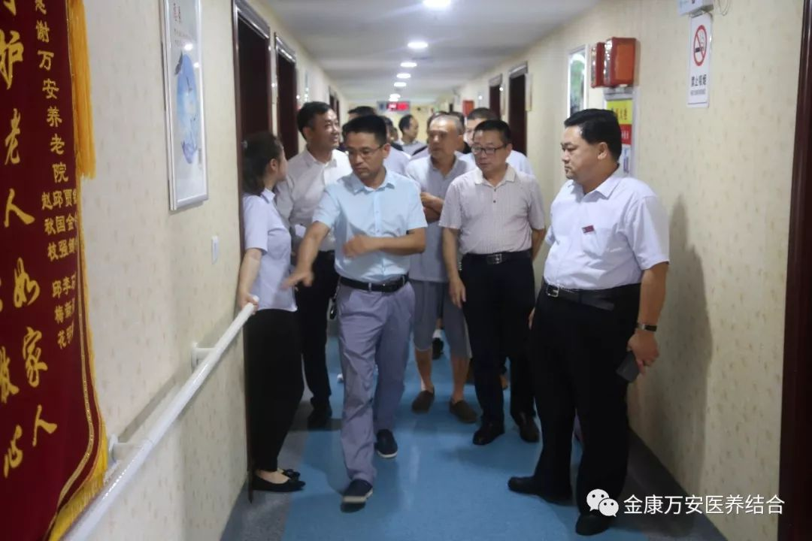

漯河万安康复医院举办社区医师交流会
人气: "" 时间：2018-07-12
2018年7月12日下午4点，万安康复医院与社区医师交流会在四楼多功能厅举行。这场别开生面的交流活动，得到了院领导的大力支持。院长王卫峰、业务院长张莉、王立信、银令令、后勤院长杨延顺、院长助理万素华等院领导出席会议。我院各科专家及60余位工作在基层的社区医师应邀参加会议，业务院长王立信主持本次交流会。
 

会议伊始，业务院长王立信首先向与会医师介绍了我院领导班子成员及出席会议的各科室专家及科室主任。随后，院长王卫峰对出席交流会的各位老师及代表表示热烈的欢迎，并向大家介绍了金康万安的发展历程及取得的变化及医院下一步发展目标。业务院长张莉、银令令分别代表院领导向大家介绍了金康护理院、万安老年公寓的基本情况、开展的业务、近年来取得的成绩和优势。我院内科、外科、康复科、中医科等7名专家代表，从科室医师团队、开展医疗项目及科室发展前景等方面向与会的社区医师进行了介绍。

交流讨论后，院长王卫峰等院领导带领大家参观了我院的医疗及养老区域，参观过程中，详细的为大家介绍了我院在医疗、养老等科室的一些科室配备及特色。
最后，参会的各位基层医师踊跃与大家就我院与基层医疗单位在对口协助、强化合作、加大社会影响力等方面的工作做了交流发言，相互讨论，相互学习。整场交流会气氛热烈，达到了预期的目的，最后王院长做了总结发言，交流会在热烈的掌声中圆满结束。